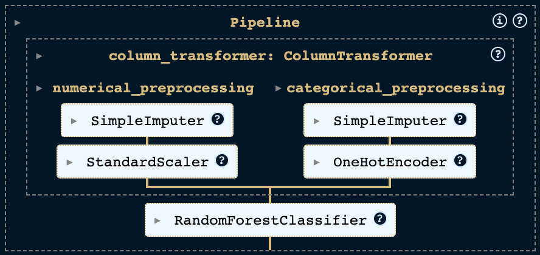
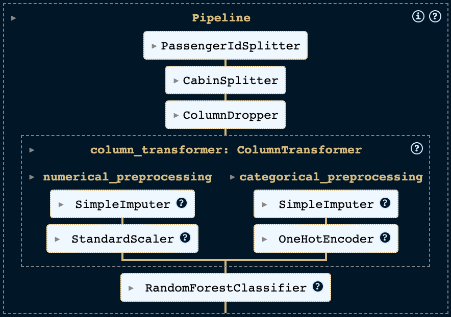

scikit-learn Pipelines
Introduction
Machine learning projects frequently require a sequence of preprocessing tasks to prepare the data for model training. Such tasks can range from filling in missing values and normalizing numerical data to encoding categorical data. The scikit-learn library simplifies this process through its Pipeline class. This handy tool allows to bundle the preprocessing steps and model training into one unified workflow, acting much like an individual estimator.
Benefits of Using Pipelines
Incorporating pipelines into your scikit-learn projects brings a multitude of benefits that streamline the machine learning process:
- Modularity: Pipelines promote a modular approach to coding by bundling preprocessing and model training steps into distinct components. This not only simplifies the code, making it more accessible and easier to manage but also allows these components to be reused across different projects, enhancing efficiency and consistency.
- Automation: Pipelines facilitate the automation of training and evaluation for multiple models with predefined configurations for preprocessing and training. This is particularly useful when dealing with continuous data influx, as it allows for swift model retraining with updated data.
- Reproducibility: By using pipelines, you can ensure that the same preprocessing steps are applied consistently to different datasets. This improves the reproducibility of your machine learning experiments.
In this blog post, we will explore how to effectively implement pipelines in scikit-learn, demonstrating how they can improve the efficiency and clarity of your machine learning workflows.
Prerequisites
For the code examples, we will use Python 3.11. The code is available in this Jupyter Notebook. The following libraries are needed to run the code examples:
- scikit-learn - scikit-learn is a machine learning library. It offers a wide range of machine learning algorithms and preprocessing steps.
- pandas - pandas is a library for data manipulation and analysis. It provides data structures and operations for manipulating numerical tables and time series.
- scipy - scipy is a library for scientific computing. It offers a wide range of mathematical algorithms and convenience functions built on top of NumPy.
Dataset
We will use the Spaceship Titanic dataset from Kaggle. The dataset holds information about the passengers of a Spaceship which collided with a spacetime anomaly. The task is to predict whether a passenger was transported to an alternate dimension during the Spaceship Titanic's collision. The dataset contains the following features:
PassengerId- A unique id for each passenger. Each id takes the formgggg_ppwhereggggindicates a group the passenger is travelling with, and pp is their number within the group. People in a group are often family members, but not always.HomePlanet- The planet the passenger departed from, typically their planet of permanent residence.CryoSleep- Indicates whether the passenger elected to be put into suspended animation for the duration of the voyage. Passengers in cryosleep are confined to their cabins.Cabin- The cabin number where the passenger is staying. Takes the formdeck/num/side, where side can be either P for Port or S for Starboard.Destination- The planet the passenger will be debarking to.Age- The age of the passenger.VIP- Whether the passenger has paid for special VIP service during the voyage.RoomService,FoodCourt,ShoppingMall,Spa,VRDeck- Amount the passenger has billed at each of the Spaceship Titanic's many luxury amenities.Name- The first and last names of the passenger.Transported- Whether the passenger was transported to another dimension. This is the target, the column we are trying to predict.
Loading the Dataset
Let’s start by loading the dataset into a pandas DataFrame to get an overview of the data and be able to work with it.
import pandas as pd
from sklearn.model_selection import train_test_split
dataset_df = pd.read_csv('../kaggle/datasets/spaceship-titanic/train.csv')
# Extract the target variable
y = dataset_df['Transported']
X = dataset_df.drop(['Transported'], axis=1)
# Split the dataset into train and test
X_train, X_test, y_train, y_test = train_test_split(X, y, test_size=0.2)
In this code snippet:
- We start by importing the necessary libraries:
pandasfor data handling andtrain_test_splitfrom scikit-learn for splitting the data. - The dataset is loaded into a DataFrame named
dataset_dfusingpd.read_csv(). This step assumes that you have the dataset stored in the../kaggle/datasets/spaceship-titanicdirectory. If you're following along, ensure you've downloaded the dataset from Kaggle and placed it in the specified directory, or adjust the path accordingly. - We then extract the target variable,
Transported, into a separate variabley. The remaining data, which will serve as our features, is stored inXafter removing theTransportedcolumn with the.drop()method. - Finally, we use
train_test_splitto divide our data into training and test sets, with 20% of the data reserved for testing. This is a widespread practice to evaluate the performance of machine learning models on unseen data.
Creating a Basic Pipeline
Next, we'll construct a straightforward pipeline to handle missing values and scale numeric features. We'll utilize the SimpleImputer and StandardScaler from scikit-learn for these tasks. The SimpleImputer fills missing values with the feature's mean, while the StandardScaler standardizes features by removing the mean and scaling to unit variance. These steps will be combined into a single object using the Pipeline class.
from sklearn.pipeline import Pipeline
from sklearn.impute import SimpleImputer
from sklearn.preprocessing import StandardScaler
numerical_preprocessor = Pipeline([
('imputer', SimpleImputer()),
('scaler', StandardScaler())
])
This pipeline is ready to transform our dataset using numerical_preprocessor.fit_transform(X). However, as our dataset includes categorical features, we need a separate pipeline for those and then merge both pipelines.
For categorical features, we also use SimpleImputer but with the strategy to replace missing values with the most frequent value. Additionally, we employ OneHotEncoder to convert categorical features into one-hot encoded numeric arrays. We configure it to produce a dense array (sparse_output=False) and to ignore unknown categories during transformation (handle_unknown='ignore'), which is useful when new categories are encountered which were not present in the training set.
from sklearn.pipeline import Pipeline
from sklearn.impute import SimpleImputer
from sklearn.preprocessing import OneHotEncoder
categorical_preprocessor = Pipeline([
('imputer', SimpleImputer(strategy='most_frequent')),
('encoder', OneHotEncoder(sparse_output=False, handle_unknown='ignore'))
])
With both pipelines for numerical and categorical features ready, we combine them using ColumnTransformer. This class applies transformers to subsets of columns. We can specify the columns using tuples that hold the transformer name and a list of columns, or using a selector object that can be created with make_column_selector and selects the columns by data type.
Here, we apply numerical_preprocessor to all numeric columns and categorical_preprocessor to all categorical columns:
from sklearn.compose import ColumnTransformer, make_column_selector
column_transformer = ColumnTransformer([
('numerical_preprocessing', numerical_preprocessor, make_column_selector(dtype_include=np.number)),
('categorical_preprocessing', categorical_preprocessor, make_column_selector(dtype_include=object))
])
Now that we have a single pipeline that can transform our data, we add a classifier to the pipeline. We will use a random forest classifier. Random forest classifiers train a series of decision trees from different subsamples and determine the class prediction using a majority voting strategy. So, they belong to the ensemble learning methods, since a variety of classifiers is utilized.
from sklearn.ensemble import RandomForestClassifier
pipeline = Pipeline([
('preprocessing', column_transformer),
('classifier', RandomForestClassifier())
])
At this point, our pipeline looks like this:

Now we can fit the pipeline to our training data and evaluate the model using the test set.
As the code snippet illustrates, pipelines make it amazingly easy to train and score the model when we receive new data. We can simply call pipeline.fit(X_train, y_train) to train the model and pipeline.score(X_test, y_test) to score the model on the test data.
This setting gives an accuracy of 76.7% with a random state of 22, which is a respectable result for a first attempt. Nonetheless, there is room for improvement, possibly through feature engineering and fine-tuning the hyperparameters of the model. Let's explore how pipelines can facilitate these improvements.
Feature Engineering and Custom Transformers
Feature engineering is a crucial step in the data science process, where raw data is transformed into features that more accurately represent the problem at hand, thereby enhancing the predictive performance of the model on unseen data.
The PassengerId is a unique identifier for each passenger, but also a group identifier according to the feature descriptions provided with the dataset. While we would not expect hidden information in a unique identifier, the group identifier could be useful. According to the description, people in a group are often family members, so there might be some correlation between the group identifier and the target variable. We can extract the group identifier from the PassengerId and add it as a new feature.
Similarly, the Cabin column offers valuable insights into the deck, room number, and side of the ship. By transforming these information into separate features, we can enrich our dataset further.
Additionally, we might want to remove the Name column as it is unlikely to be useful for predicting the target variable.
Given the specificity of these tasks to this dataset, it's unlikely that an off-the-shelf transformer from libraries like scikit-learn will meet our needs. However, creating a custom transformer is straightforward by subclassing the BaseEstimator and TransformerMixin classes from scikit-learn. The TransformerMixin class offers a fit_transform method, which combines fit and transform. Meanwhile, the BaseEstimator class provides get_params and set_params methods, which are required by other scikit-learn tools such as GridSearchCV and RandomizedSearchCV.
Custom Transformers
Let's dive into how to extract both the group identifier and the passenger number from the PassengerId. We'll achieve this by creating a new class named PassengerIdSplitter, which will inherit from both the BaseEstimator and TransformerMixin classes. This setup allows us to seamlessly integrate our custom transformer into most scikit-learn workflows.
To make our class functional, we need to implement two essential methods: fit and transform.
- The
fitmethod is designed to prepare the transformer based on the data it receives. However, in our scenario, the process of splitting thePassengerIdis straightforward and does not depend on learning anything from the dataset. Therefore, ourfitmethod will simply returnself, indicating that no fitting process is necessary. - The
transformmethod is where the magic happens. Here, we take thePassengerIdand split it into two separate components: the group identifier and the passenger number. These components are then added to our dataset as new features. Following this, we remove the originalPassengerIdcolumn, as it's no longer needed, and return the modified DataFrame with our newly added features.
This approach not only enriches our dataset with potentially valuable information but also maintains the integrity and usability of the data for further analysis or machine learning tasks.
import pandas as pd
from typing import Self
from sklearn.base import BaseEstimator, TransformerMixin
class PassengerIdSplitter(BaseEstimator, TransformerMixin):
"""Split the PassengerId into Group and Number"""
def fit(self, X: pd.DataFrame, y=None) -> Self:
return self
def transform(self, X: pd.DataFrame) -> pd.DataFrame:
# Split the PassengerId into Group and Number
identifier_split = X['PassengerId'].str.split('_', expand=True)
identifier_split.columns = ['Group', 'Number']
# Concatenate the new columns
X = pd.concat([X, identifier_split], axis=1)
# Drop the original column
return X.drop(['PassengerId'], axis=1)
The logic for the Cabin column follows a similar pattern. We create a new class called CabinSplitter, which inherits from the BaseEstimator and TransformerMixin classes. Then we implement the methods fit and transform. In the method fit we return self because we do not have to adapt the transformer to the data. In the method transform we split the column cabin into the deck, the room and the side of the ship and add them as new features. We also transform the room number into a numeric feature to avoid categorical features with a large number of categories (high cardinality). The original column Cabin is then removed and the transformed DataFrame is returned.
import pandas as pd
from typing import Self
from sklearn.base import BaseEstimator, TransformerMixin
class CabinSplitter(BaseEstimator, TransformerMixin):
"""Split the Cabin into Deck, Room and Side"""
def fit(self, X: pd.DataFrame, y=None) -> Self:
return self
def transform(self, X: pd.DataFrame) -> pd.DataFrame:
# Split the Cabin into Deck, Room and Side (port or starboard)
cabin_df = X['Cabin'].str.split('/', expand=True)
cabin_df.columns = ['Deck', 'Room', 'Side']
# Treat room as numerical to avoid high cardinality
# Note: We are using numpys Int32 type to allow for missing values
cabin_df['Room'] = cabin_df['Room'].astype("Int32")
# Merge the new columns
X = pd.concat([X, cabin_df], axis=1)
# Drop the original column
return X.drop(['Cabin'], axis=1)
For the Name column, we follow the same pattern, but now we allow a list of columns to be passed to the constructor of the transformer and only drop the specified columns within the transform method.
import pandas as pd
from typing import Self
from sklearn.base import BaseEstimator, TransformerMixin
class ColumnDropper(BaseEstimator, TransformerMixin):
"""Drop the specified columns"""
def __init__(self, columns):
self.columns = columns
def fit(self, X: pd.DataFrame, y=None) -> Self:
return self
def transform(self, X: pd.DataFrame) -> pd.DataFrame:
# Drop the specified columns
return X.drop(self.columns, axis=1)
Adding the Custom Transformers to the Pipeline
Now that we have our custom transformers, we can add them to the pipeline exactly like we added the scikit-learn transformers. This leads us to the following configuration:
from sklearn.ensemble import RandomForestClassifier
pipeline = Pipeline([
('column_dropper', ColumnDropper(columns=['Name'])),
('cabin_splitter', CabinSplitter()),
('passenger_id_splitter', PassengerIdSplitter()),
('preprocessing', column_transformer),
('classifier', RandomForestClassifier())
])
Our pipeline now looks like this:

If we set the same random state, fit the pipeline to our training data and evaluate the model against the test data, we get an accuracy of 0.788. This is quite a significant improvement over the earlier model. Let's move on to tuning the hyperparameters of the model.
Hyperparameter Tuning
Hyperparameter tuning is the process of finding the best hyperparameters for a specific model. These hyperparameters are set prior to the start of the learning process, unlike the model's parameters, which are determined during training. For instance, in a RandomForestClassifier, the number of trees is a hyperparameter, while the weights of the trees are considered parameters.
Scikit-learn pipelines behave like a single estimator. Therefore, we can use scikit-learn's model selection methods to tune the hyperparameters of our pipeline. We will use scikit-learn's RandomizedSearchCV class to find the best hyperparameters. The class RandomizedSearchCV implements a randomized search over hyperparameters, where each configuration is taken from a given search space.
To set up our search, we define a dictionary where hyperparameters are keys, and the possible values they can take are the corresponding values. For hyperparameters nested within the pipeline, we use the __ syntax, linking the step name and the parameter name. For instance, to adjust the strategy parameter of a SimpleImputer used in numerical preprocessing, we'd use the notation preprocessing__numerical_preprocessing__imputer__strategy. This dictionary is then passed as the param_distributions argument to RandomizedSearchCV.
Let's apply this to fine-tune the strategy of our numerical imputer and some hyperparameters of the RandomForestClassifier. We create a search space, include it with our pipeline in the RandomizedSearchCV setup, and continue to fit this configuration to our training data. The performance is then assessed on the test data.
For the RandomizedSearchCV, we choose n_iter=100 to explore 100 different combinations of hyperparameters. We use cv=5 for 5-fold cross-validation, ensuring a robust evaluation. The refit=True option ensures the best-found model is retrained on the full training dataset. Lastly, n_jobs=-1 allows the use of all available processors to speed up the search.
from scipy.stats import randint
from sklearn.model_selection import RandomizedSearchCV
# Define the search space
search_space = [
{
'column_transformer__numerical_preprocessing__imputer__strategy': ['mean', 'median'],
'classifier__min_samples_split': randint(2, 15),
'classifier__min_samples_leaf': randint(1, 10),
'classifier__max_features': ['sqrt', 'log2', None],
}
]
# Define the RandomizedSearchCV object
random_search = RandomizedSearchCV(
extended_pipeline,
search_space,
scoring='accuracy',
refit=True,
n_iter=100,
cv=5,
n_jobs=-1,
random_state=RANDOM_STATE
)
# Fit the RandomizedSearchCV object to the training data
random_search.fit(X_train, y_train)
Note: This step can take a while to run. If you want to run the code yourself, you can reduce the number of iterations to speed up the process.
The code snippet provided illustrates the search_space is defined as a list of dictionaries. This is particularly beneficial when you're aiming to tune multiple models, each requiring a unique set of hyperparameters. To add another model to your tuning process, you can simply include it in the list. Then, update the classifier in your pipeline and specify the hyperparameters you wish to adjust for that model.
Once the search is complete, we can evaluate the model based on the test data.
We obtain an accuracy score of 0.792 when using the same random state. This is an improvement compared to the performance of our earlier model. To gain further insights into how this performance was achieved, we can examine the best set of hyperparameters selected during the search. This information is accessible via the best_params_ attribute of the RandomizedSearchCV object.
Which outputs the following for our random_state with n_iter=100:
{
'classifier__max_features': None,
'classifier__min_samples_leaf': 4,
'classifier__min_samples_split': 5,
'column_transformer__numerical_preprocessing__imputer__strategy': 'mean'
}
When looking at these hyperparameters, I assume that classifier__max_features: None is the most important one. This setting allows the model to use all features for the split, as opposed to the default value "sqrt" which only allows the square root of the total number of features. While I believe that further fine tuning of these parameters could improve performance, I will not delve into this in the scope of this blog post.
Conclusion
In this post, we've explored the use of pipelines in scikit-learn, covering the essentials from creating a basic pipeline to incorporating custom transformers and tuning hyperparameters. We also delved into how pipelines ease the training and evaluation of models on new data.
Pipelines serve as an invaluable tool for organizing our code more modularly and enhancing maintainability. They shine especially when dealing with continuous data inflow, enabling swift retraining of models with fresh data. This feature makes pipelines not just a convenience but a strategic advantage in dynamic environments where data constantly evolves.